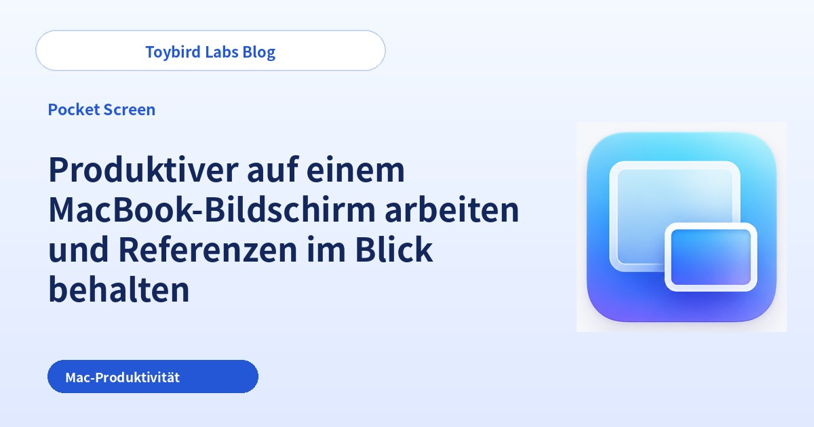
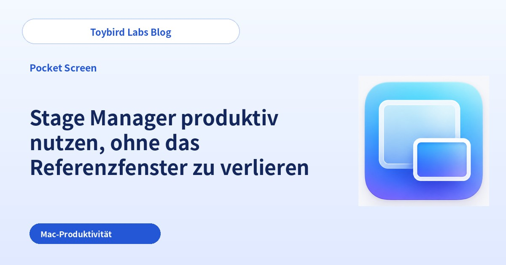
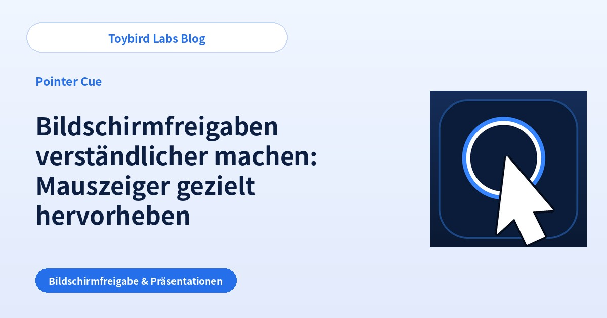
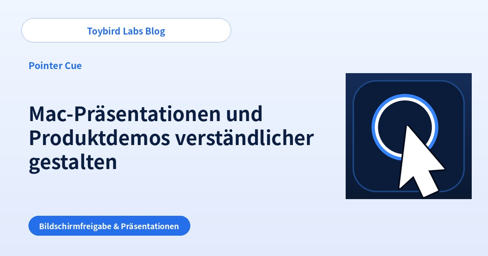
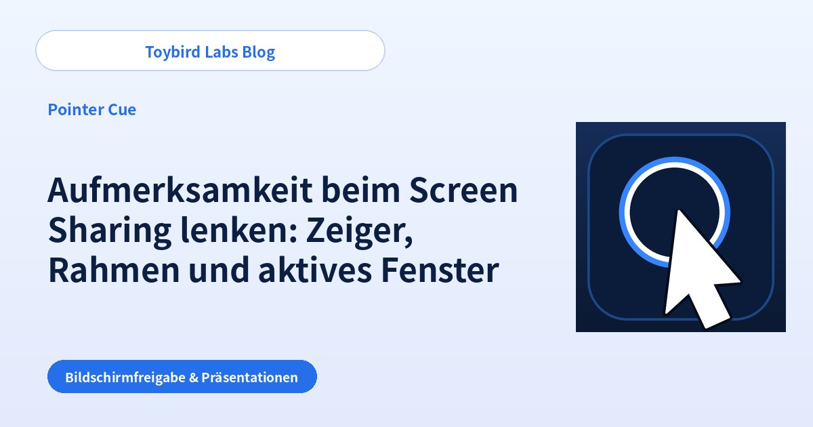

Toybird Labs Blog
Praktische Ideen für bessere Arbeit und leichteres Lernen
Schritt-für-Schritt-Anleitungen für generative KI im Arbeitsalltag sowie praktische Tipps zu Mac-, Windows- und Lern-Apps.
Alle Artikel
Hier anfangen

ChatGPT im Arbeitsalltag nutzen: 5 Prompt-Tipps und 10 praktische Beispiele
Lernen Sie, ChatGPT im Arbeitsalltag mit fünf klaren Prompt-Gewohnheiten, zwei ausführlichen Beispielen und zehn sofort nutzbaren Einsatzmöglichkeiten zu verwenden.
Praxisleitfäden nach Aufgabe

Mit ChatGPT eine höfliche Absage-E-Mail schreiben
Erstellen Sie mit ChatGPT eine klare, professionelle Absage, indem Sie Anfrage, Einschränkung, Alternative und nächsten Schritt eindeutig festlegen.

Mit ChatGPT Besprechungsnotizen in Aufgaben umwandeln
Nutzen Sie ChatGPT, um Entscheidungen, Aufgaben, Verantwortliche, Fristen und offene Fragen aus ungeordneten Besprechungsnotizen zu trennen.

ChatGPT-Antwort geht am Ziel vorbei: 6 Ursachen und passende Korrektur-Prompts
Erfahren Sie, warum eine ChatGPT-Antwort zu lang ist, den falschen Ton trifft oder unbelegte Fakten ergänzt, und korrigieren Sie sie mit gezielten Folgeanweisungen.

Mit ChatGPT professionelle Kundenantworten schreiben
Erstellen Sie präzise Kunden-E-Mails mit ChatGPT, indem Sie Kundenanfrage, bestätigte Fakten, offene Punkte und nächsten Schritt sauber trennen.

ChatGPT vor der Antwort Rückfragen stellen lassen
Verwenden Sie Prompts, mit denen ChatGPT fehlende Informationen einzeln, als kurze Liste oder mit Auswahlmöglichkeiten abfragt.

Lange Dokumente mit ChatGPT für die Arbeit zusammenfassen
Fassen Sie lange Dokumente mit ChatGPT zusammen, indem Sie Leser, Entscheidung, Länge, erforderliche Belege und den Umgang mit fehlenden Informationen festlegen.

Texte mit ChatGPT für verschiedene Zielgruppen umschreiben
Passen Sie mit ChatGPT dieselben Fakten an Kunden, Führungskräfte, interne Teams oder Einsteiger an, ohne die Aussage zu verändern.

Optionen mit ChatGPT vergleichen und eine Entscheidungstabelle erstellen
Vergleichen Sie Produkte oder Dienste mit ChatGPT, indem Sie Kriterien, Prioritäten, fehlende Daten und Regeln für Empfehlungen festlegen.

Verkaufsgespräche mit ChatGPT im Rollenspiel üben
Richten Sie ein realistisches Vertriebsrollenspiel mit Kundenprofil, einer Frage nach der anderen, Einwänden und strukturiertem Feedback ein.
Produktiver auf einem MacBook-Bildschirm arbeiten

Produktiver auf einem MacBook-Bildschirm arbeiten und Referenzen im Blick behalten
So arbeitest du produktiv auf einem MacBook-Bildschirm und behältst PDF, Webseite oder Chat im Blick. Verglichen werden Kacheln, Split View, Stage Manager und ein schwebendes Referenzfenster.

Fensterwechsel auf dem Mac reduzieren und Referenzen sichtbar halten
Reduziere wiederholte Fensterwechsel auf dem Mac, indem PDF, Webseite, Chat oder Dashboard sichtbar bleiben. Vergleiche Bordmittel mit einem dauerhaft sichtbaren Referenzfenster.

Stage Manager produktiv nutzen, ohne das Referenzfenster zu verlieren
Nutze Stage Manager auf dem Mac, ohne PDF, Webseite oder Chat ständig aus dem Blick zu verlieren. Vergleiche gemeinsame Gruppen mit einer dauerhaften schwebenden Referenz.
Remote-Meetings und Produktdemos verständlicher machen

Bildschirmfreigaben verständlicher machen: Mauszeiger gezielt hervorheben
Hilf dem Publikum, dem Mauszeiger bei Zoom, Teams oder Google Meet zu folgen. Vergleiche Systemeinstellungen, Präsentationstempo und einen Ring auf Abruf.

Mac-Präsentationen und Produktdemos verständlicher gestalten
Mache Mac-Präsentationen und Produktdemos verständlicher, indem klar ist, welches Fenster gerade wichtig ist. Vergleiche Aufräumen, Einzelfensterfreigabe und aktiven Fensterfokus.

Aufmerksamkeit beim Screen Sharing lenken: Zeiger, Rahmen und aktives Fenster
Mache Hinweise verständlicher: Zeiger für ein Bedienelement, Rahmen für einen Bereich und Fensterfokus für die aktuelle App.